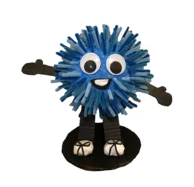
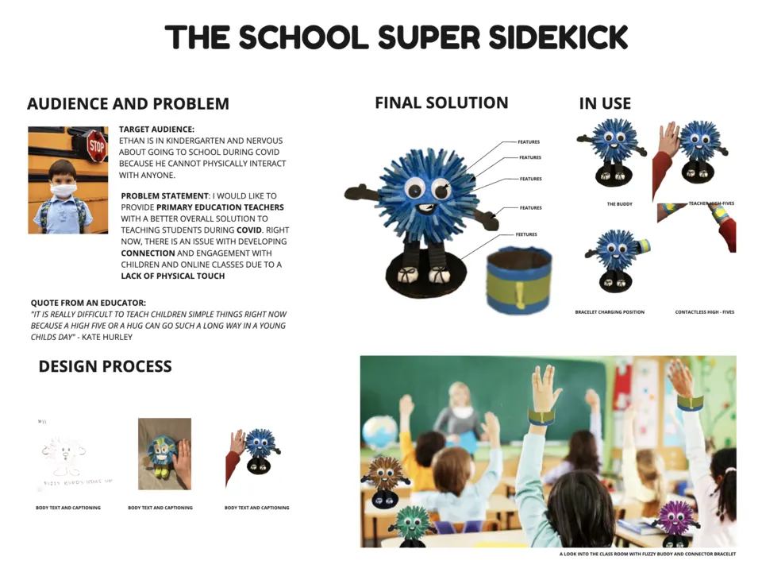
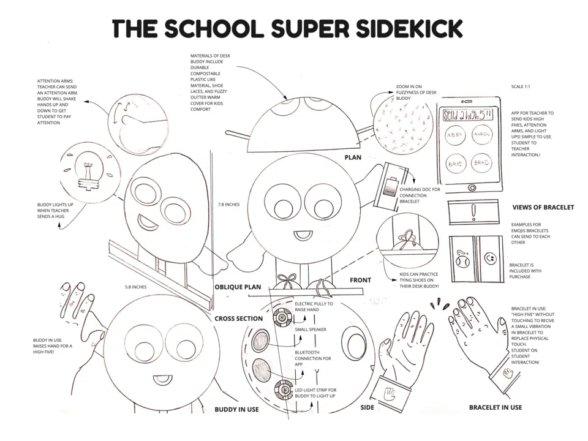
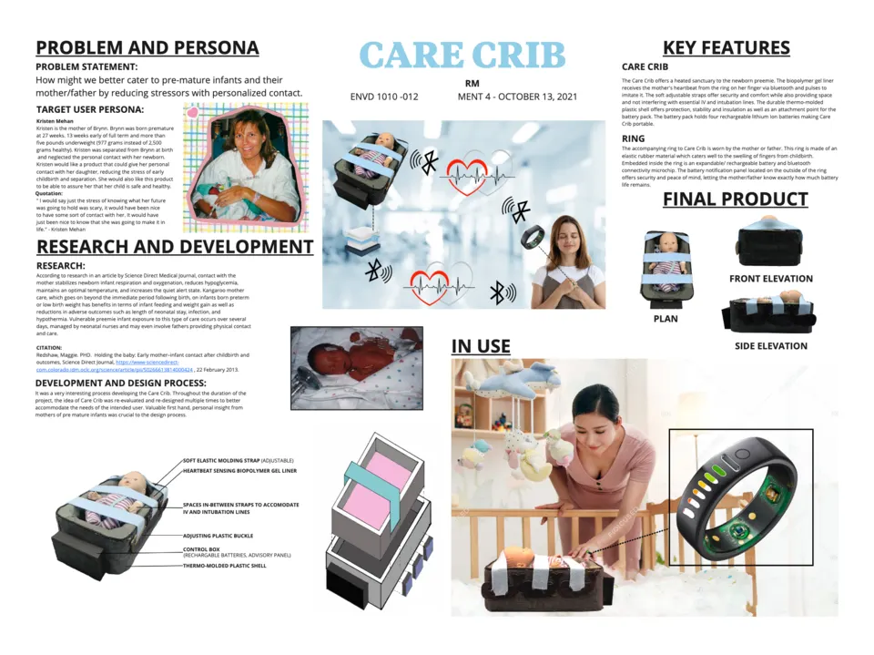
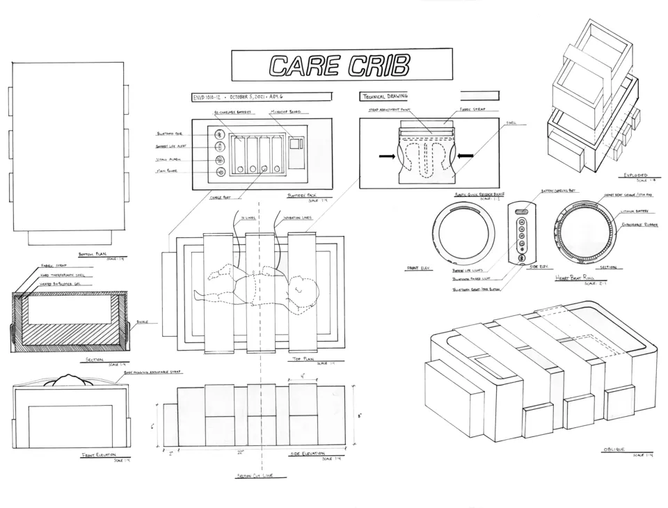
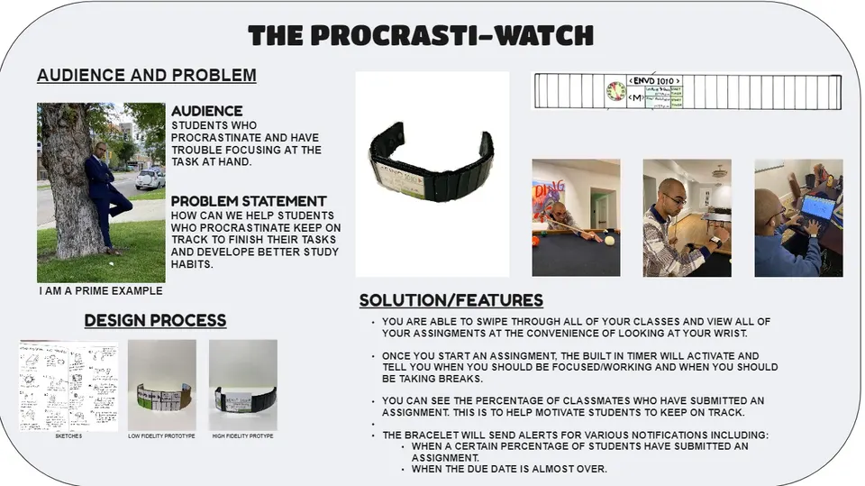
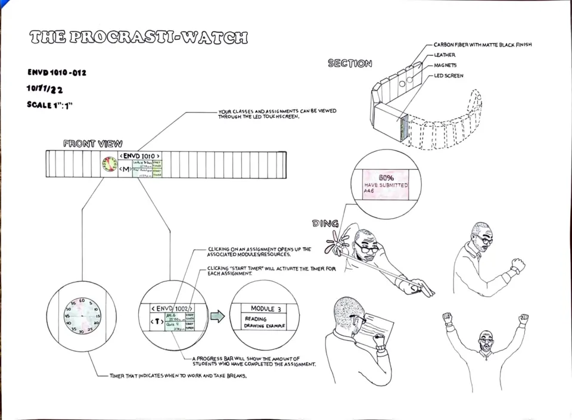
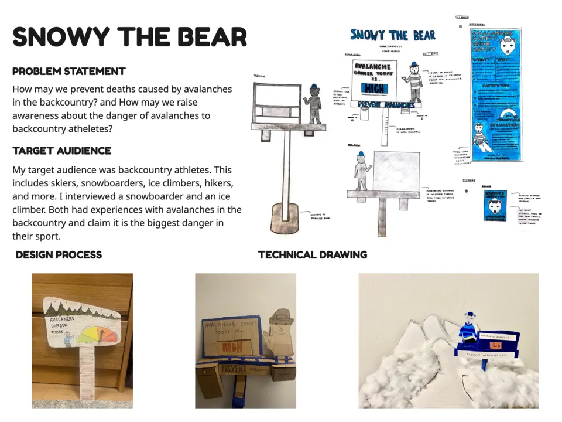
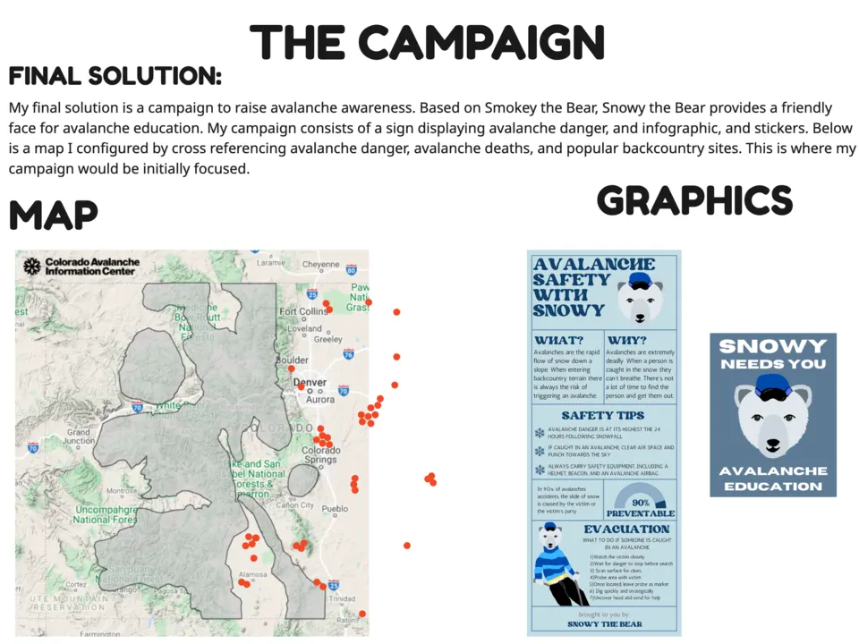

It introduces students to design as an iterative process of understanding people, framing needs, generating possibilities, making ideas tangible, and learning from evidence. I coordinate ENVD 1010 as a foundational course serving more than 200 students each fall, which means aligning faculty, mentoring teaching assistants, and working to create a coherent experience across sections.
The course develops fluency in concept ideation, sketching, technical drawing, model making, prototyping, user identification, design thinking, optimization, and presentation, taught as connected practices rather than isolated skills. The selected work shows students applying this process to education, neonatal care, study habits, and avalanche safety.








